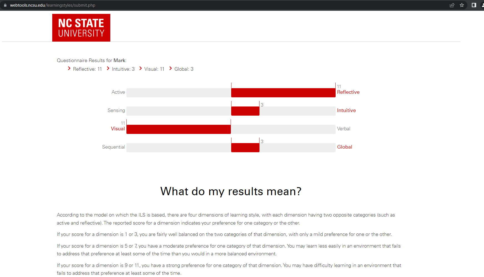
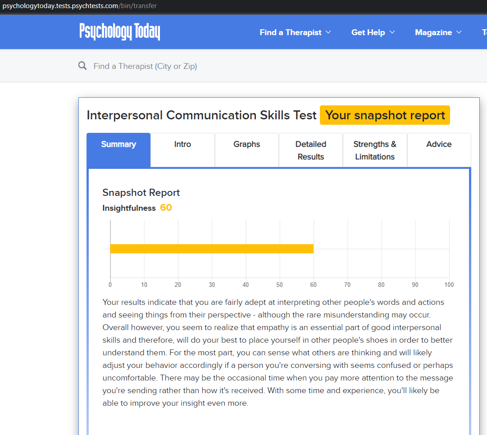

Personal Profile
I undertook three tests:
1/ Myers Briggs personality test
2/ North Carolina State University learning style test
3/ Psychology Today Communication test
All the tests use a series of questions that are tabulated to form a conclusion.
The tests, in my view, range in levels of veracity from somewhat reliable to maybe reliable.
1/ Myers/Briggs
The Myers Briggs test has been used since the 1960’s. The test attempts to measure a person in terms of:
Extroversion vs Introversion
Sensing vs Intuition
Thinking vs Feeling
Judgement vs Perception
Assertive vs Turbulent
Results :
2/ North Carolina State University Learning style
This test attempts to measure candidates learning type :
Active vs Reflective
Sensing vs Intuitive
Visual vs Verbal
Sequential vs Global
Results :

3/ Psychology today communication style test.
This test derives an “insightfulness” level, that indicates communication effectiveness.
Results :

Personal Analysis
What do the results of these tests mean for you?
I purposely chose tests that I thought have a range of reliability.
I have always a bit dubious about the accuracy and usefulness of these types of tests. I think they should be used as a guide only. Their use together with a persons own analysis of past experiences (eg what went right, wrong on previous projects) may be useful. The motives of the test providers can be questionable too. For example, are the detailed results and proposed strategies only available on payment that then promote other tests. Somewhat worryingly, the Psychology Today test has a “Find a Therapist” function on the home page. However, on the plus side, the Myers/Briggs test undertaken as part of this assignment did deliver the same results as a test I did (through a certified provider) in the mid 1980’s, although I can’t remember having an assertive vs turbulent component back then.
How
do you think these results may influence your behaviour in a team?
I’m unsure I can answer this in general way. With personalities and other human traits, there are so many variables. For example the type of task may dictate the style of thinking required. Obviously a task needing deep multi component analysis is probably best suited to people that do not prematurely jump to a judgement phase. On the other hand, it is, in my experience important not to overload a team with the same skills, eg a person having a more “global” outlook on a problem is useful to ensure the team achieves it’s end goals with the individuals not just being totally engaged in their “silo”. In the end it all depends on the project deliverable s and the makeup of the team.
How
should you take this into account when forming a team?
I
believe a team balance is important, so as mentioned above, having a
variety of human traits in
a team is
important. An
issue
is
that the team is most
often
picked for you by a manager without much consultation.
This is not usually because the manager lacks foresight, but often
depends on what resources are available at any given time, eg people
that happen
to be between projects, what
team leader(s) are available etc.